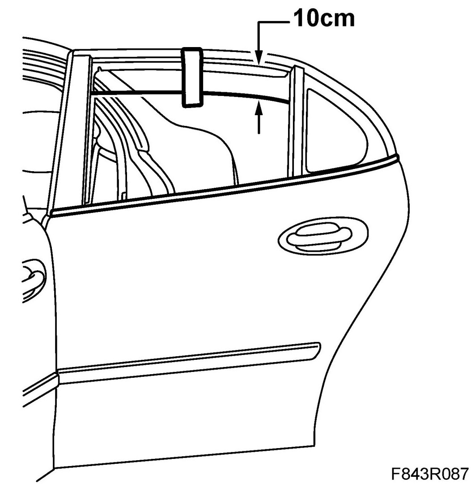
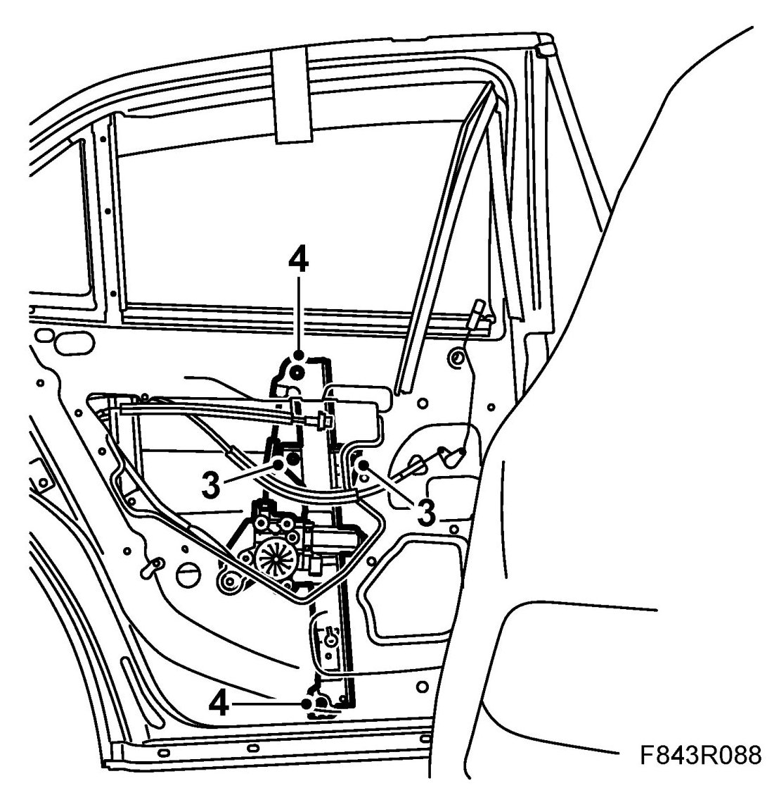
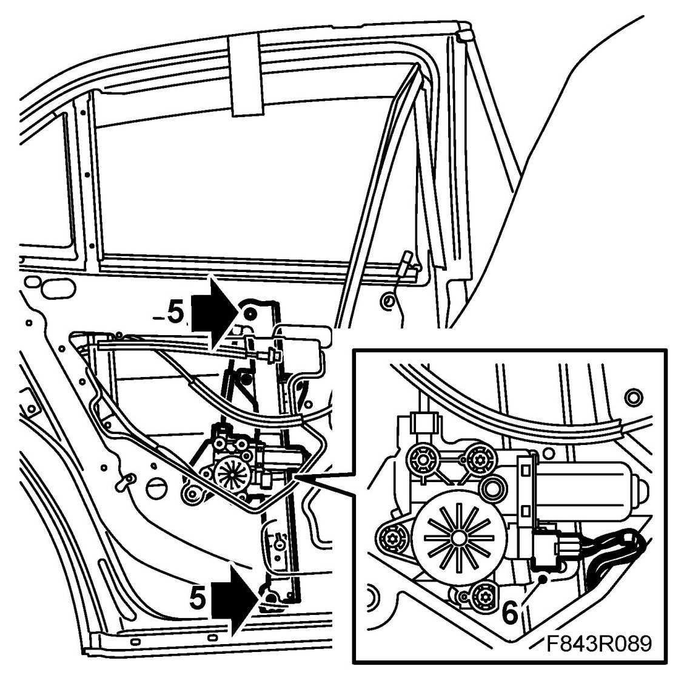
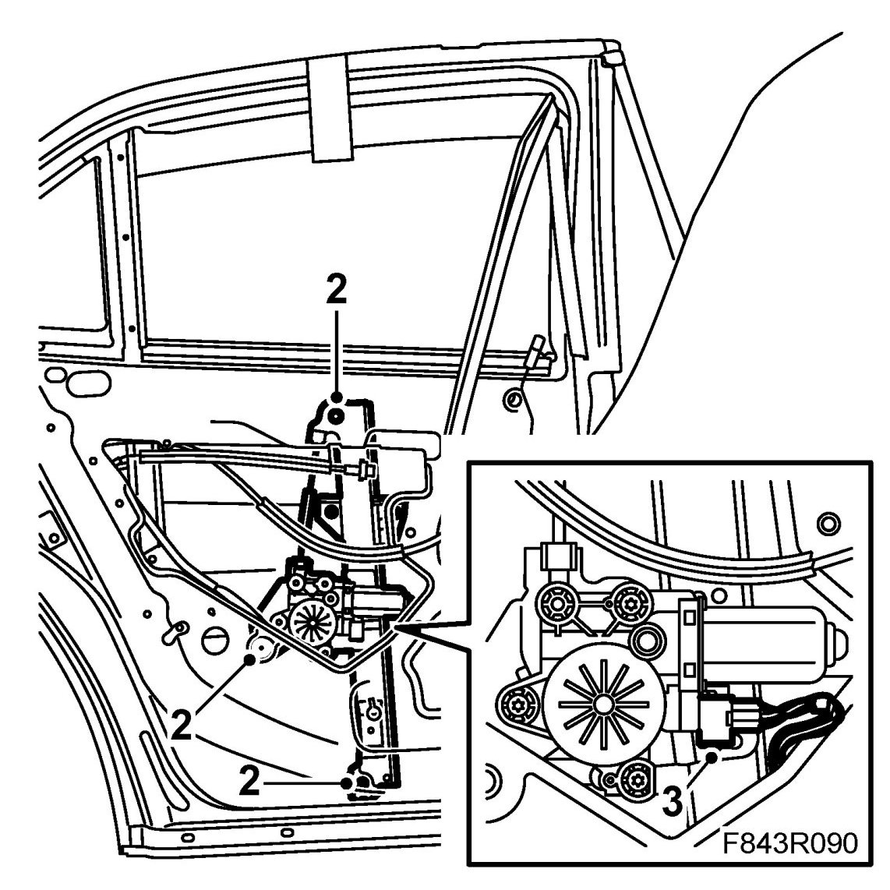
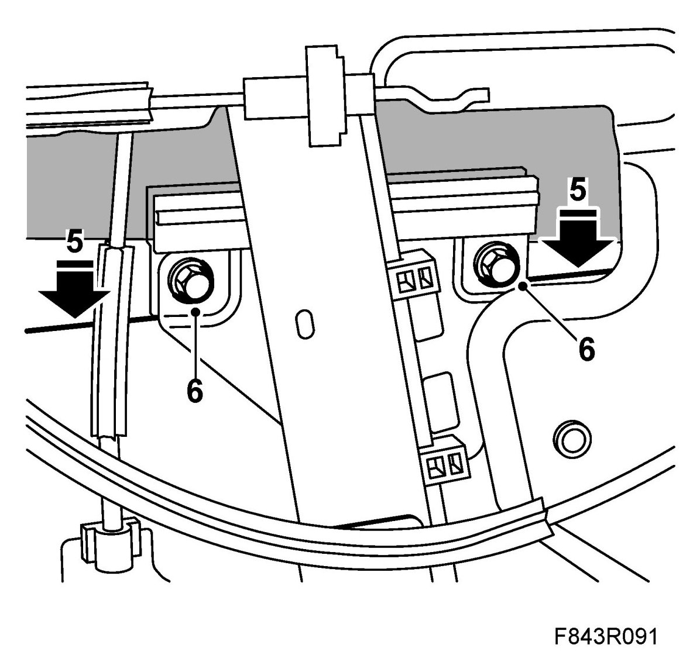

Rear Door Window Regulator: Service and Repair
Window Lift, Rear
To remove
1. Open the window approx. 10 cm and secure the window with tape.

2. Remove the door trim and water barrier.
3. Slacken/remove the bolts to release the window.

4. Remove the nuts and bolt securing the window lift.
5. Press out the window lift so that the studs come free of the mounting holes.

6. Unplug the motor.
7. Angle out the guide channel through the hole.
To fit
1. Angle in the guide channel and insert the studs into the mounting holes.

2. Fit the nuts and bolt.
3. Plug in the connector.
4. Remove the tape.
5. Lower the window to its mountings. Press the window down into the rubber lined mountings.

6. Tighten the bolts securing the window.
7. Raise and lower the window several times to check its function.
8. Fit the water barrier and door trim.
Cars with pinch protection: Perform Calibration of pinch protection